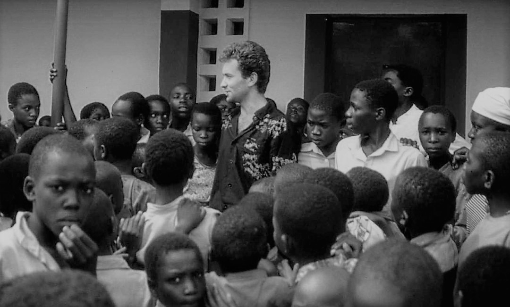

Fernando Simón con un grupo de niños el día de Navidad de 1991.
/ Marco Pascual
Aquí tenemos la historia cronológica de la vida del Dr. Fernando
Simón
-
1963 - Nació en Zaragoza.
-
1987 - Se licenció en medicina en
la universidad de Zaragoza.
-
1989 - Viajó a Londres a seguir
estudiando y lo hizo en la Escuela de Londres de Higiene y
Medicina Tropical.
-
XXXX - Continuó ampliando
conocimientos con el programa "European centre for disease
prevention and control.
-
XXXX - Volvió a España para
trabajar en algunos pueblos de Aragón.
-
XXXX - En los 90's estuve en
Somalia, Mozambique, Togo, Gautemala, Ecuador...
-
XXXX - Estuvo durante 9 años en
África
-
XXXX - Fue el director del centro
de investigación de enfermedades tropicales en Manica, Mozambique.
Especializandose en la malaria, VIH, tuberculosis...
-
XXXX - Estuvo en Burundi dirigiendo
el hospital como voluntario de "medicus mundi" siendo el único
médico que atendía a 150 pacientes al día.
-
1998 - Dejó su aventura africana
para dirigirse a Guatemala.
-
2001 - Se mudaron a París, donde
trabajó como epidemiólogo en el instituto de vigilancia sanitaria.
-
2003 - Simón viajó a España con su
familia, aquí montó y dirigió la unidad de alertas y emergencias
la red nacional de epidemiología hasta 2011.
-
2011 - También estuvo al frente de
la unidad de alerta y respuesta del instituto de salud Carlos III
dirigiendo el programa nacional de epidemiología.
-
2012 - Se incorporó como
coordinador nacional en el centro europeo para prevención y
control de enfermedades.
-
2012 - Fue nombrado director del
centro de coordinación de alertas y emergencias sanitarias.
"Es esa clase de personas que siempre quieres tener a tu lado
cuando las cosas se complican".
--José Ramón Arribas, jefe de la Unidad de Enfermedades
Infecciosas del hospital de La Paz.